About this module
This page contains 15 classroom-ready lessons. Every lesson includes a longer explanation, learning targets, an applied capstone example, and a local instructional diagram that shows the lesson rules in a clear three-step sequence.
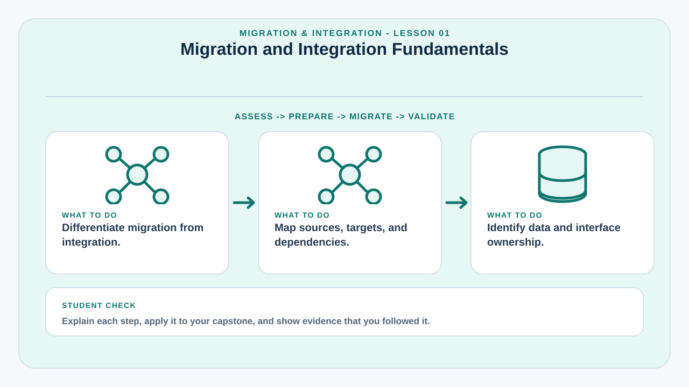
Migration and Integration Fundamentals
Migration moves data, applications, or processes to a new environment; integration enables separate systems to exchange information and work together.
Migration and integration are often combined during a capstone rollout, but they solve different problems. Migration answers “how do we move from the old state to the new state?†Integration answers “how will this system communicate with systems that remain in use?â€
A successful migration protects data completeness, accuracy, traceability, and availability. A successful integration defines interfaces, ownership, security, error handling, and synchronization behavior.
Teams should begin by identifying source systems, target systems, data owners, interfaces, business rules, and dependencies. This prevents late discoveries such as undocumented spreadsheets, duplicate records, or external services required by critical workflows.
Learning targets
- Differentiate migration from integration.
- Map sources, targets, and dependencies.
- Identify data and interface ownership.
Why this matters in a capstone
This lesson helps the team connect implementation decisions to deployment evidence, technical documentation, operational readiness, and questions that may be raised during evaluation or defense.
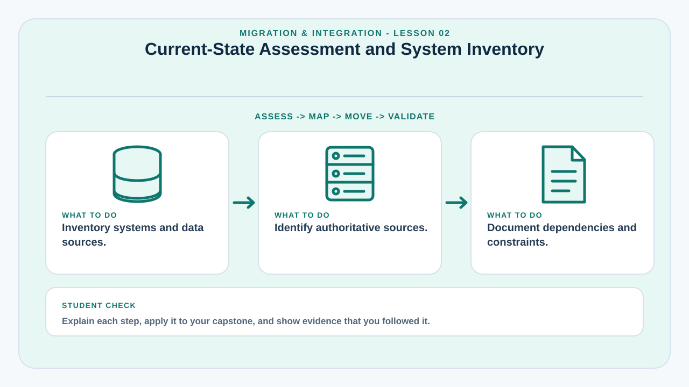
Current-State Assessment and System Inventory
Before moving anything, the team must understand the systems, files, databases, and processes that currently exist.
A current-state assessment inventories applications, databases, spreadsheets, APIs, file repositories, manual forms, user roles, reports, and recurring processes. It also identifies which source is authoritative when the same information appears in multiple places.
Technical inventory should record platform, version, owner, access method, data format, record count, data quality issues, security restrictions, and integration dependencies. Process inventory should document how information enters, changes, and leaves the system.
This assessment prevents migration from becoming a simple copy operation. The team can distinguish data that must be preserved, transformed, archived, merged, or intentionally excluded.
Learning targets
- Inventory systems and data sources.
- Identify authoritative sources.
- Document dependencies and constraints.
Why this matters in a capstone
This lesson helps the team connect implementation decisions to deployment evidence, technical documentation, operational readiness, and questions that may be raised during evaluation or defense.
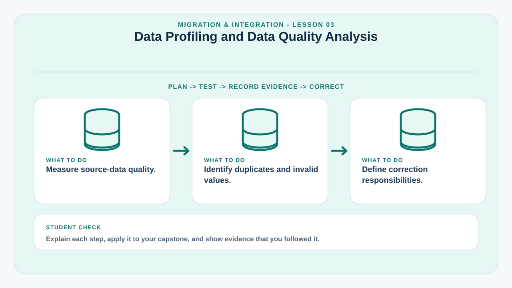
Data Profiling and Data Quality Analysis
Data profiling measures the condition of source data before transformation begins.
Typical quality dimensions include completeness, validity, consistency, uniqueness, timeliness, and accuracy. A database may contain duplicate users, missing dates, inconsistent capitalization, invalid codes, or values stored in the wrong format.
Profiling uses counts, distributions, null rates, duplicate checks, range checks, pattern checks, and cross-field validation. These results help estimate migration effort and define cleansing rules.
Data quality decisions should be documented. Teams should know which errors can be corrected automatically, which require a data owner to decide, and which must be preserved because the historical source cannot be safely interpreted.
Learning targets
- Measure source-data quality.
- Identify duplicates and invalid values.
- Define correction responsibilities.
Why this matters in a capstone
This lesson helps the team connect implementation decisions to deployment evidence, technical documentation, operational readiness, and questions that may be raised during evaluation or defense.
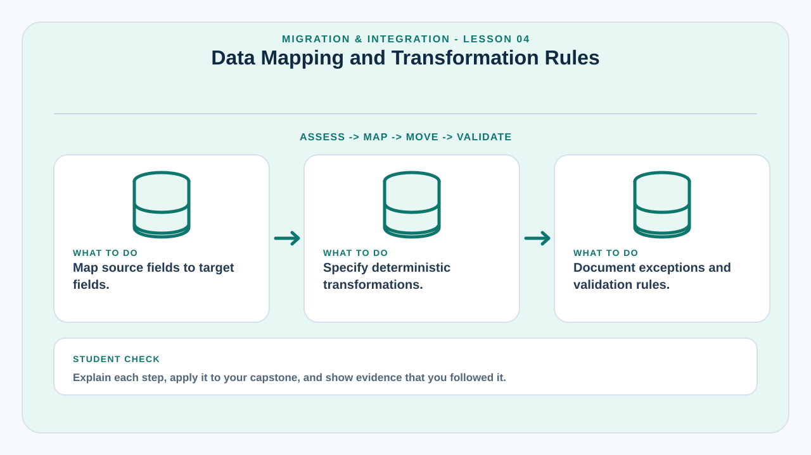
Data Mapping and Transformation Rules
Data mapping defines how each source field becomes a target field.
A mapping document links source tables and columns to target tables and columns. It also defines transformations such as date normalization, code conversion, trimming whitespace, splitting full names, merging fields, or generating new identifiers.
Transformation rules must be deterministic. Different team members should obtain the same output from the same input. When a new system uses stricter validation, the mapping must explain how legacy values that violate new rules will be handled.
Mapping is also evidence during defense because it demonstrates that data migration was designed rather than improvised.
Learning targets
- Map source fields to target fields.
- Specify deterministic transformations.
- Document exceptions and validation rules.
Why this matters in a capstone
This lesson helps the team connect implementation decisions to deployment evidence, technical documentation, operational readiness, and questions that may be raised during evaluation or defense.
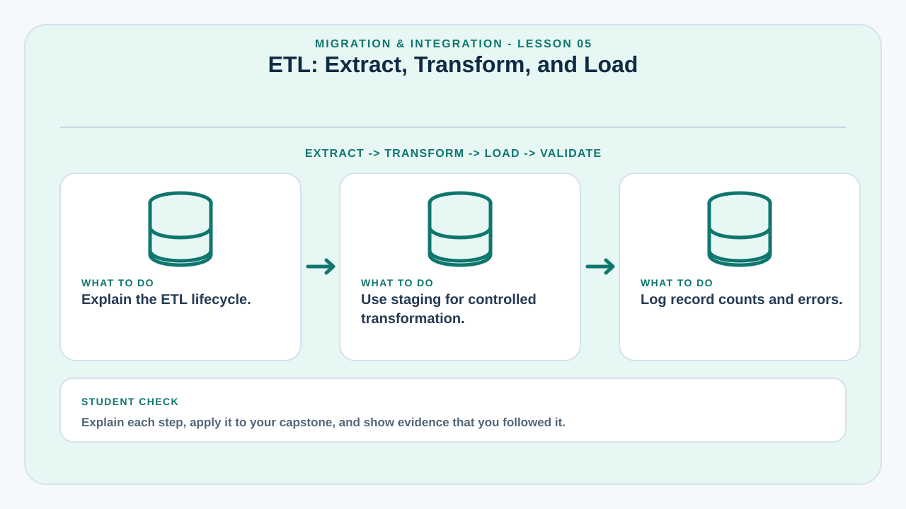
ETL: Extract, Transform, and Load
ETL organizes migration into controlled stages that can be tested and repeated.
Extraction reads data from source systems without damaging the original. Transformation cleans, validates, restructures, and enriches data. Loading inserts transformed records into the target in the correct order.
Teams should consider staging tables or temporary files so transformations can be inspected before final loading. ETL logs should report how many records were read, accepted, rejected, updated, and written.
Repeatability is essential. If a migration test reveals a problem, the team should be able to correct the rule, reset the test target, and run the migration again.
Learning targets
- Explain the ETL lifecycle.
- Use staging for controlled transformation.
- Log record counts and errors.
Why this matters in a capstone
This lesson helps the team connect implementation decisions to deployment evidence, technical documentation, operational readiness, and questions that may be raised during evaluation or defense.
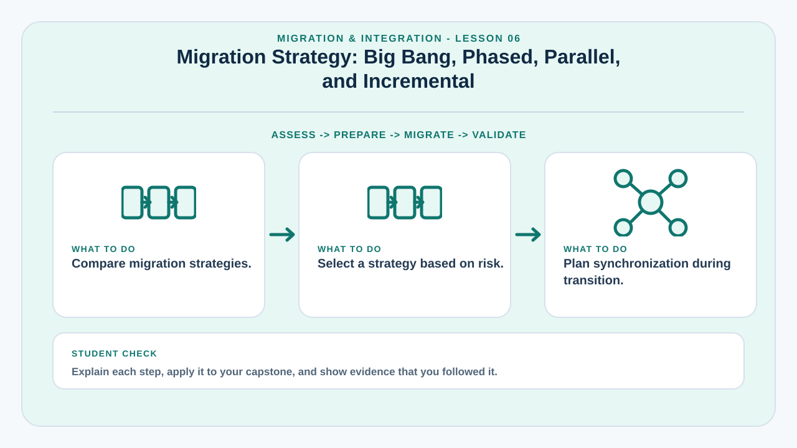
Migration Strategy: Big Bang, Phased, Parallel, and Incremental
Migration strategy controls when users and data move from the legacy process to the new system.
Big-bang migration switches all users and data at once. Phased migration moves selected areas over time. Parallel operation runs old and new systems together temporarily. Incremental migration moves batches or changes over multiple cycles.
The correct choice depends on system criticality, ability to synchronize data, user readiness, operational cost, and rollback feasibility. Parallel operation reduces immediate risk but can create duplicate work and reconciliation problems.
Capstone projects should explain why the chosen migration approach is proportionate to risk and available resources.
Learning targets
- Compare migration strategies.
- Select a strategy based on risk.
- Plan synchronization during transition.
Why this matters in a capstone
This lesson helps the team connect implementation decisions to deployment evidence, technical documentation, operational readiness, and questions that may be raised during evaluation or defense.
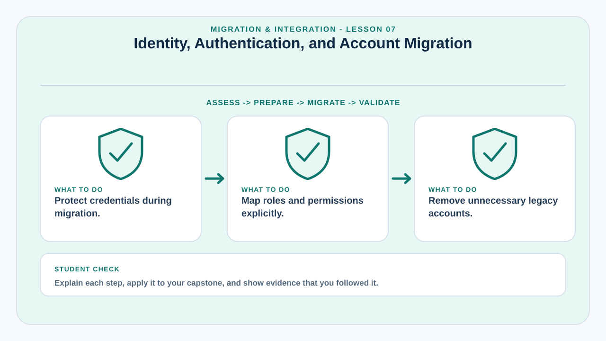
Identity, Authentication, and Account Migration
Moving user accounts requires special care because identity data affects access control and security.
Account migration may involve usernames, email addresses, roles, organizational units, account status, and password handling. Passwords should not be exported in plain text. In many migrations, users must reset passwords because legacy hashes cannot or should not be transferred.
Role mapping is critical. A legacy role named “staff†may not correspond exactly to a role in the new system. Permissions should be mapped explicitly rather than inferred only from role names.
Dormant, duplicate, or terminated accounts should be reviewed before migration. Moving unnecessary accounts increases security risk.
Learning targets
- Protect credentials during migration.
- Map roles and permissions explicitly.
- Remove unnecessary legacy accounts.
Why this matters in a capstone
This lesson helps the team connect implementation decisions to deployment evidence, technical documentation, operational readiness, and questions that may be raised during evaluation or defense.
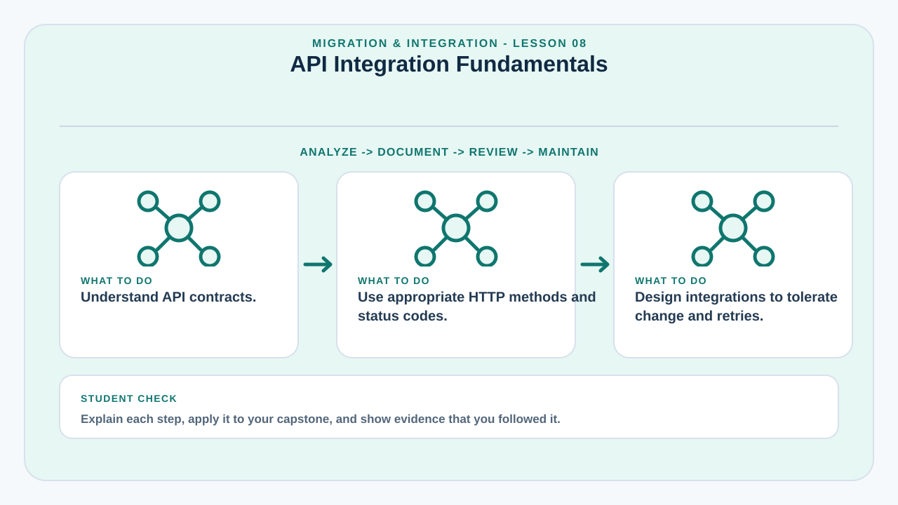
API Integration Fundamentals
APIs provide structured interfaces that allow applications to exchange data and trigger functions.
A REST API commonly uses HTTP methods such as GET, POST, PUT, PATCH, and DELETE. The API contract defines endpoints, request data, response data, status codes, authentication, validation rules, and error structures.
Integration design should minimize tight coupling. If the external system changes, the capstone application should ideally isolate that change within a service or adapter rather than spreading external assumptions throughout the codebase.
Students should also understand idempotency for operations that may be retried. A repeated request should not accidentally create duplicate payments, messages, or records when the intended operation is logically one-time.
Learning targets
- Understand API contracts.
- Use appropriate HTTP methods and status codes.
- Design integrations to tolerate change and retries.
Why this matters in a capstone
This lesson helps the team connect implementation decisions to deployment evidence, technical documentation, operational readiness, and questions that may be raised during evaluation or defense.
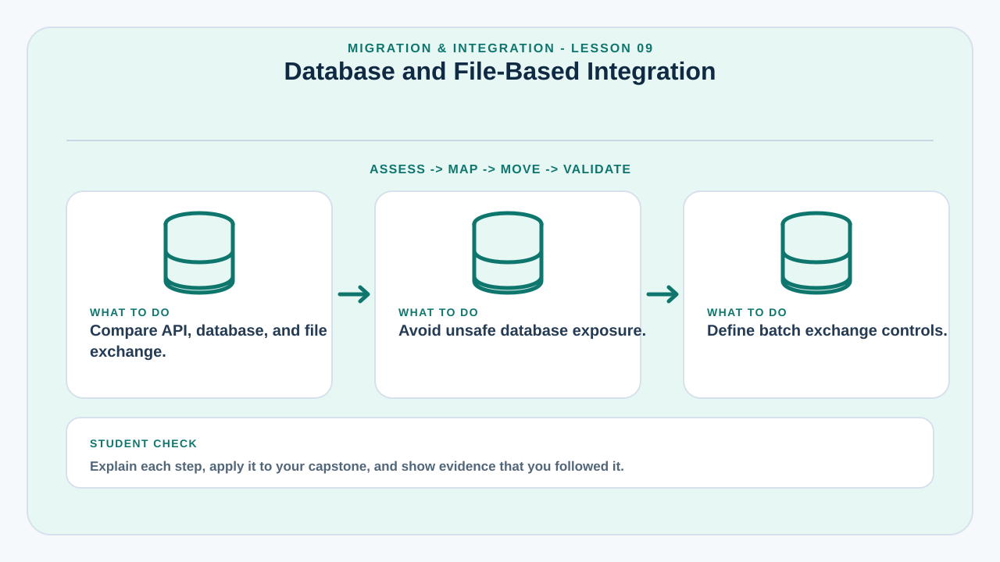
Database and File-Based Integration
Not every integration uses a web API; some organizations exchange data through databases, CSV files, or controlled folders.
Direct database integration can be efficient but creates strong coupling and significant security concerns. The consuming system may depend on internal table structures that were never intended as a public interface.
File-based integration uses exported CSV, JSON, XML, or spreadsheets. It is simpler for periodic batch exchange but requires naming conventions, validation, duplicate prevention, secure transfer, and clear scheduling.
Teams should select an integration method based on frequency, timeliness, security, source capabilities, and maintenance cost.
Learning targets
- Compare API, database, and file exchange.
- Avoid unsafe database exposure.
- Define batch exchange controls.
Why this matters in a capstone
This lesson helps the team connect implementation decisions to deployment evidence, technical documentation, operational readiness, and questions that may be raised during evaluation or defense.
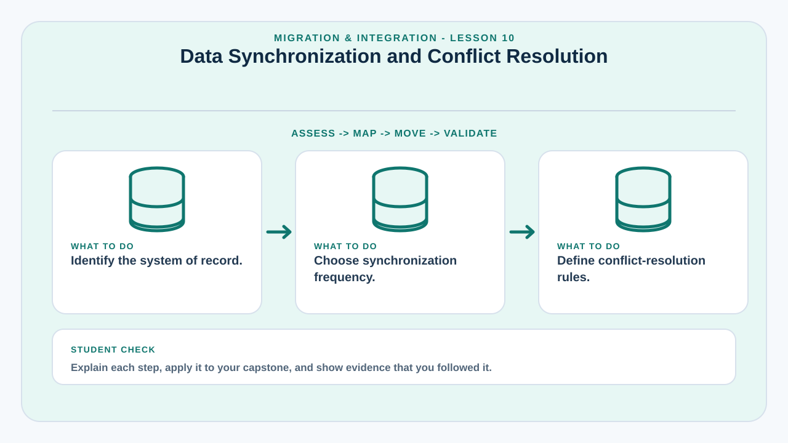
Data Synchronization and Conflict Resolution
When two systems can change related data, synchronization rules determine which value wins.
Synchronization may be one-way or two-way, real-time or scheduled. The design must identify the system of record for each data element. Without clear ownership, two systems may repeatedly overwrite each other's changes.
Conflict resolution can use timestamps, version numbers, source priority, manual review, or domain-specific rules. Timestamps alone may be unreliable when clocks differ or offline updates arrive late.
A strong design also records synchronization status and failures so administrators can identify records that are out of sync.
Learning targets
- Identify the system of record.
- Choose synchronization frequency.
- Define conflict-resolution rules.
Why this matters in a capstone
This lesson helps the team connect implementation decisions to deployment evidence, technical documentation, operational readiness, and questions that may be raised during evaluation or defense.
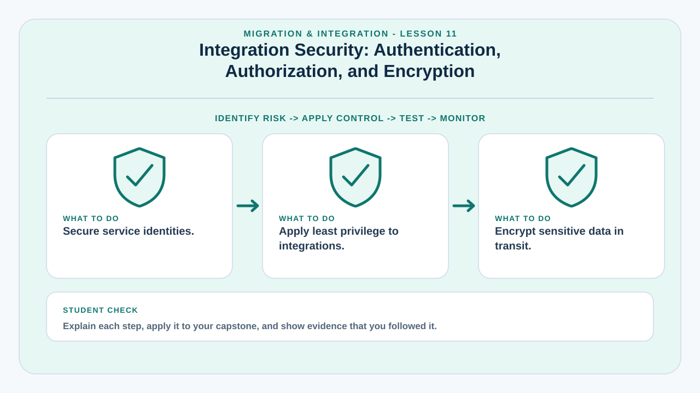
Integration Security: Authentication, Authorization, and Encryption
System-to-system connectivity expands the security boundary and must be explicitly protected.
Integrations may use API keys, signed tokens, OAuth, service accounts, mutual TLS, or network-level controls. Credentials should be scoped to the minimum permissions required and stored securely.
Authorization must be checked even when systems trust each other. A service used only to read attendance data should not automatically receive permission to modify student profiles.
Sensitive data should be encrypted in transit, and logs should avoid exposing secrets or full confidential payloads. Key rotation and credential revocation should also be planned.
Learning targets
- Secure service identities.
- Apply least privilege to integrations.
- Encrypt sensitive data in transit.
Why this matters in a capstone
This lesson helps the team connect implementation decisions to deployment evidence, technical documentation, operational readiness, and questions that may be raised during evaluation or defense.
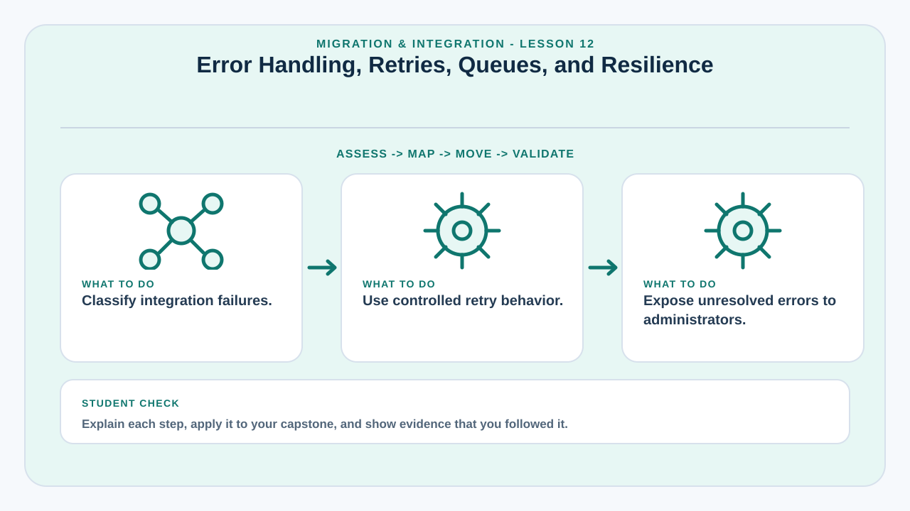
Error Handling, Retries, Queues, and Resilience
External systems can fail even when the capstone application is working correctly.
An integration may encounter timeouts, rate limits, invalid responses, temporary network failure, or maintenance downtime. The application should distinguish retryable errors from permanent errors.
Retries should use limits and delays rather than retrying continuously. Queues can decouple user actions from slow external processing, allowing the application to acknowledge a request and complete the external operation asynchronously within the system architecture.
Failures that require human action should be visible through logs, dashboards, or exception queues. Silent integration failure creates misleading confidence.
Learning targets
- Classify integration failures.
- Use controlled retry behavior.
- Expose unresolved errors to administrators.
Why this matters in a capstone
This lesson helps the team connect implementation decisions to deployment evidence, technical documentation, operational readiness, and questions that may be raised during evaluation or defense.
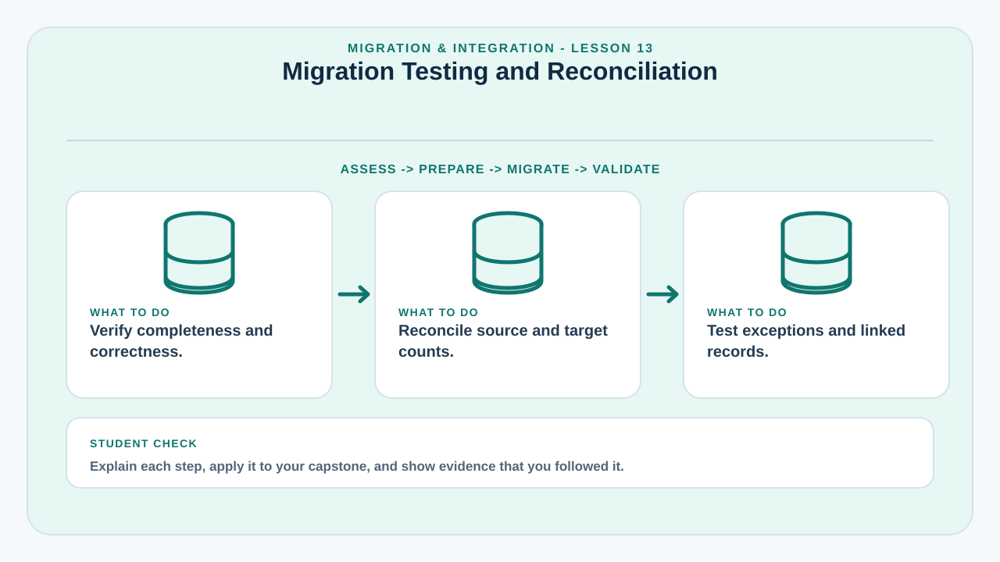
Migration Testing and Reconciliation
Testing proves not only that data was loaded, but that the migrated result is trustworthy.
Migration testing includes row counts, totals, field-level checks, referential integrity, duplicate checks, sample verification, permission validation, and application-level testing using migrated records.
Reconciliation compares the source and target using measurable controls. For financial data, totals may be critical. For records systems, record counts, unique identifiers, dates, and linked entities may matter more.
Testing should include rejected or exceptional records, not only successful imports. The team needs a clear disposition for every source record.
Learning targets
- Verify completeness and correctness.
- Reconcile source and target counts.
- Test exceptions and linked records.
Why this matters in a capstone
This lesson helps the team connect implementation decisions to deployment evidence, technical documentation, operational readiness, and questions that may be raised during evaluation or defense.
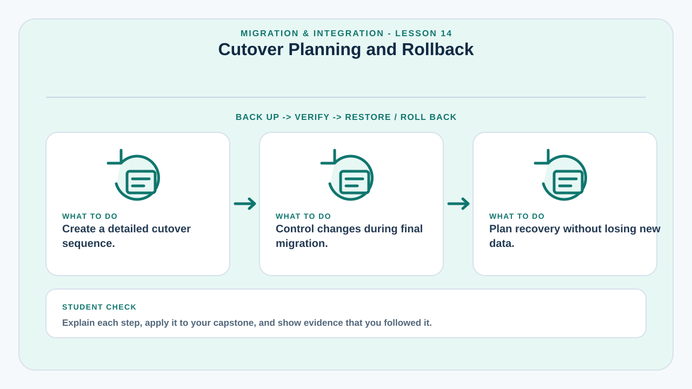
Cutover Planning and Rollback
Cutover is the controlled moment when operational use moves to the new system.
The cutover plan defines the timeline, freeze period, final data extraction, migration execution, validation, user activation, integration switch, communication, and approval to proceed. A clear decision point determines whether to continue or roll back.
A data freeze may be necessary to prevent source changes while final migration is running. If the legacy system cannot be frozen, the team may need a delta migration to capture changes made after the initial extract.
Rollback planning must consider data created after cutover. Restoring the old application is not enough if new transactions would be lost.
Learning targets
- Create a detailed cutover sequence.
- Control changes during final migration.
- Plan recovery without losing new data.
Why this matters in a capstone
This lesson helps the team connect implementation decisions to deployment evidence, technical documentation, operational readiness, and questions that may be raised during evaluation or defense.
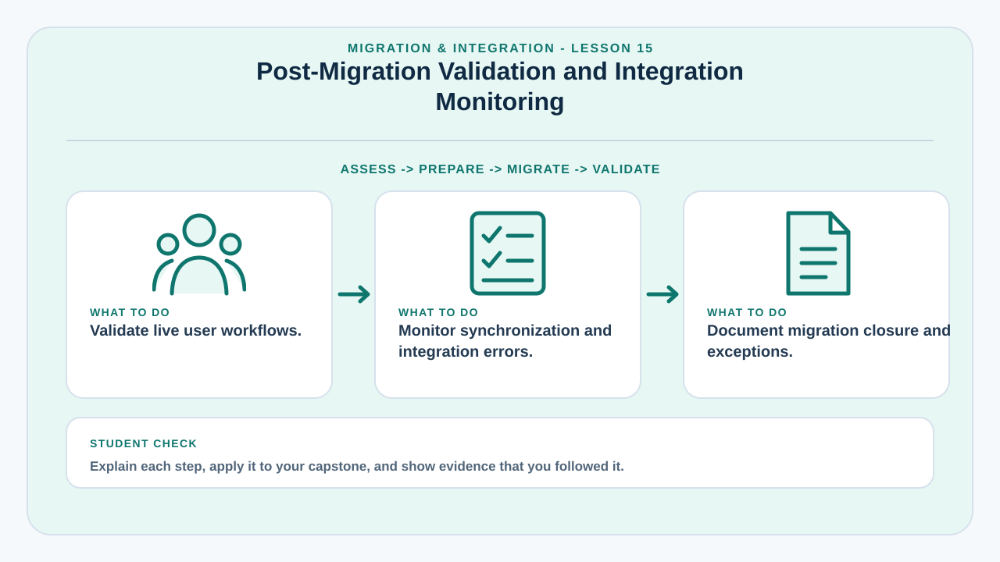
Post-Migration Validation and Integration Monitoring
After migration, the team must verify real usage and watch interfaces for hidden problems.
Post-migration validation confirms that users can find their records, permissions remain correct, integrations process live transactions, reports match expected results, and no critical data was omitted.
Monitoring should track failed imports, API error rates, queue backlogs, synchronization lag, duplicate events, and authentication failures. Early monitoring is especially important because real user behavior may reveal cases not represented in test data.
A migration closure report should document results, unresolved exceptions, archived legacy assets, sign-off, and follow-up actions.
Learning targets
- Validate live user workflows.
- Monitor synchronization and integration errors.
- Document migration closure and exceptions.
Why this matters in a capstone
This lesson helps the team connect implementation decisions to deployment evidence, technical documentation, operational readiness, and questions that may be raised during evaluation or defense.